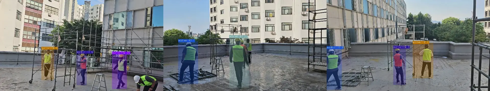
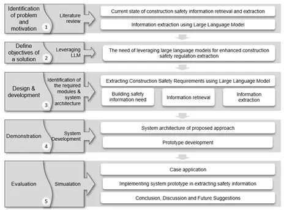
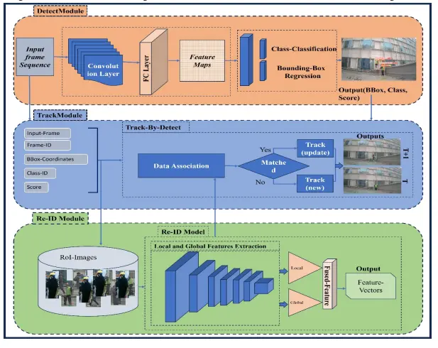
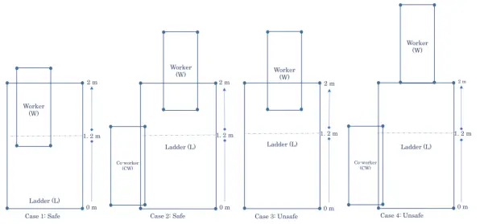
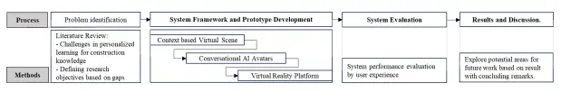
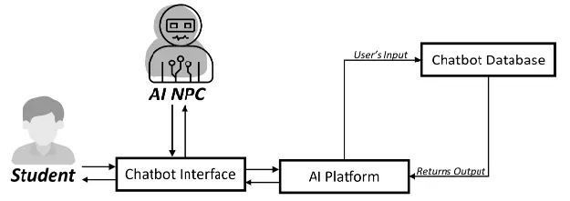
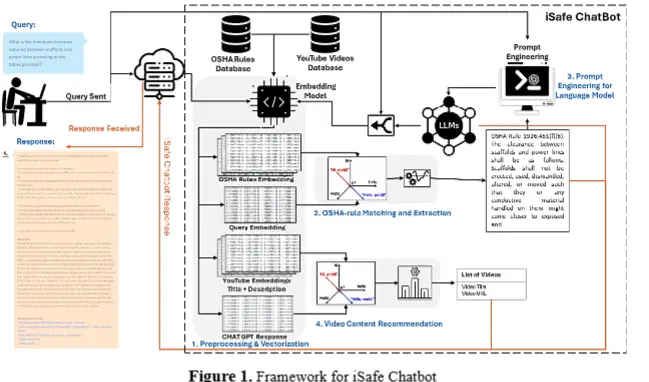
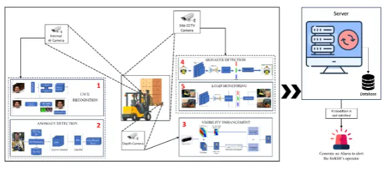

nasazzam[8]cau.ac.kr
Nasrullah Khan
Hi, I’m Nasrullah Khan, a Research Assistant at Chung-Ang University and an AI Engineer at Aartec Ltd (UK). My research focuses on the intersection of machine learning, computer vision, and vision-language models (VLMs). Currently, I’m working on building a multimodal large language model (VLLM) to enhance real-world reasoning across diverse modalities like text, images, and video etc.
Recently, I’ve worked on projects addressing real-world challenges in construction safety monitoring, automated tracking (including single, multi-camera, and PTZ systems), and conversational and agent-ai intelligent systems. These experiences have shaped my passion for creating AI solutions that have tangible impact.
I completed my BS in Software Engineering at Islamia College Peshawar, where I had the opportunity to work under the supervision of Dr. Muhammad Sajjad. Currently, I’m conducting research at ConTILab and pursuing MS in Department of Architectural Engineering, sponsered by CAYSS Scholarship.
I’m always open to collaborations and research discussions, especially in areas like multimodal learning, modality alignment, and large-scale generative AI systems. Feel free to reach out if you'd like to connect or explore potential projects together.
🔗 Connect With Me: Twitter / Github / Research Gate / Linkedin
RecentNews
- (01/2025) Submitted first-author paper on Multi-Camera Worker Tracking to Automation in Construction (Q1 Journal).
- (06/2024) Attended the International Conference on Construction Engineering and Project Management in Sapporo, Japan.
- (05/2024) Attended the Korean Society of Construction Management and Engineering , Jeju, Korea, 2024.
- (12/2024) Published a first-author paper on pose-based reid feature assisted multi-worker tracking in Automation in Construction .
- (09/2023) Joined the Vision Team at ContilLab , Seoul.
- (09/2022) Joined Aartec Ltd (UK) as AI Engineer, developing LLM-powered automation pipelines.
Publications
(🏆 indicates first author;🎤 Conference, 📖 journal, 📜 proceedings/preprints)
-
Nasrullah Khan 🏆, Dohyeong Kim, Minju Kim, Daeho Kim, Dongmin LeeSSRN Preprint (2025) 📝Proposes a multi-camera vision system integrating observations for accurate worker tracking under occlusion and viewpoint changes. -
 Nasrullah Khan 🏆, Syed Farhan Alam Zaidi, Muhammad Sibtain Abbas, Doyeop Lee, Dongmin LeeAutomation in Construction, 2024 •Elsevier, Vol. 168 (Part A) 📖Proposes a multi-camera vision system integrating observations for accurate worker tracking under occlusion and viewpoint changes.
Nasrullah Khan 🏆, Syed Farhan Alam Zaidi, Muhammad Sibtain Abbas, Doyeop Lee, Dongmin LeeAutomation in Construction, 2024 •Elsevier, Vol. 168 (Part A) 📖Proposes a multi-camera vision system integrating observations for accurate worker tracking under occlusion and viewpoint changes. -
Si Van-Tien Tran, Jaehun Yang, Rahat Hussain, Nasrullah Khan, Emmanuel C. Kimito, Akeem Pedro, Mehrtash Sotani, Ung-Kyun Lee, Chansik ParkJournal of Information Technology in Construction, Vol. 29 (2024) 📖Explore Feature assistance in multi-worker tracking combining Pose-Based selective region-based re-identification Features into data association stage of Trackingto accurately monitor construction workers in complex environments. -
Nasrullah Khan 🏆, Syed Farhan Alam Zaidi, Aqsa Sabir, Muhammad Sibtain Abbas, Rahat Hussain, Chansik Park, Dongmin LeeProc. of ICCEPM 2024 🎤Presents the DTR framework combining detection, tracking, and re-identification to monitor workers accurately in cluttered construction environments. -
Muhammad Sibtain Abbas , Nasrullah Khan, Syed Farhan Alam Zaidi, Rahat Hussain, Aqsa Sabir, Doyeop Lee, Chansik ParkProc. of ICCEPM 2024 🎤Proposes a CV-based mobile app detecting workers on ladders and co-workers in real time to identify ladder safety hazards automatically. -
Rahat Hussain , Aqsa Sabir, Muhammad Sibtain Abbas, Nasrullah Khan, Syed Farhan Alam ZaidiProc. of ICCEPM 2024 🎤Describes a virtual learning system with AI agents using LLMs for personalized construction safety training. -
Aqsa Sabir, Rahat Hussain, Syed Farhan Alam Zaidi, Muhammad Sibtain Abbas, Nasrullah Khan, Doyeop Lee, Chansik ParkProc. of ICCEPM 2024 🎤Explores conversational-AI-driven serious games to improve construction students’ problem-solving skills. -
Syed Farhan Alam Zaidi, Muhammad Sibtain Abbas, Rahat Hussain, Aqsa Sabir, Nasrullah Khan, Jaehun Yang, Chansik ParkProc. of ICCEPM 2024 🎤Introduces a conversational chatbot for dynamic construction safety education based on OSHA rules and video content. -
Muhammad Sibtain Abbas, Aqsa Sabir, Nasrullah Khan, Syed Farhan Alam Zaidi, Rahat Hussain, Jaehun Yang, Chansik ParkProc. of CONVR 2023 📜Proposes iSafe ForkLift, a CV-based safety system addressing forklift hazards like unauthorized use and operator drowsiness.
Honors & Awards
- Peer Review Certificate — Focus on Peer Reviewing Process. Certificate Link
- CAYSS Scholar — Chung-Ang University Asian Young Scientist Scholarship (2023). Certificate Link
- Machine Learning For ALL (Course) — University of London, Coursera. Certificate Link
Miscellany
I enjoy reading (Books, Manhua, Mangas, Manhwas, TechStuff etc.), Playing Football, Love Hiking, and exploring new technologies. I am also fluent in English, Urdu, and Pashto.
This website is built from the
source code of Zhi-Yi Chin's awesome website.